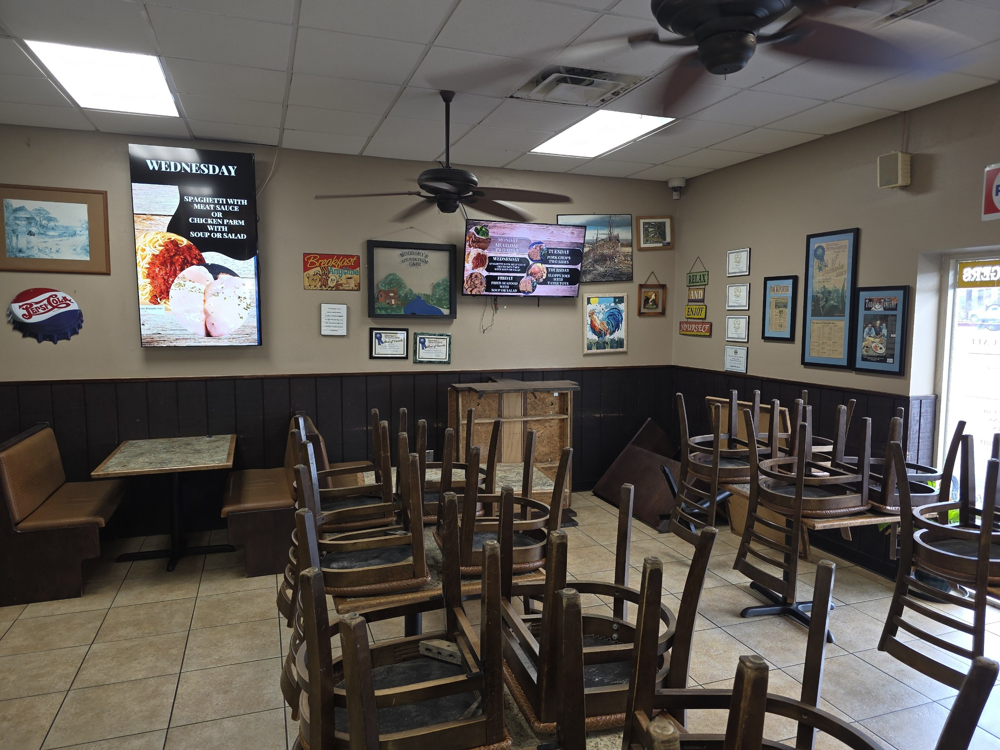
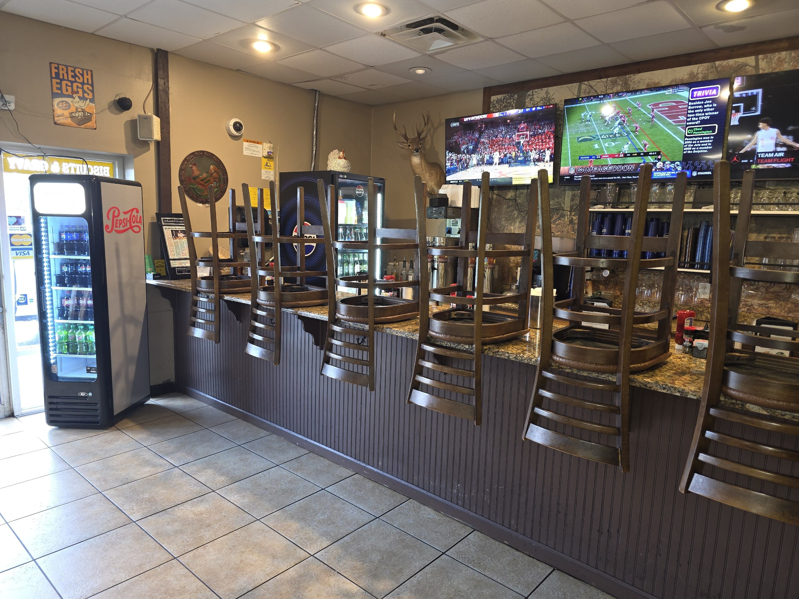
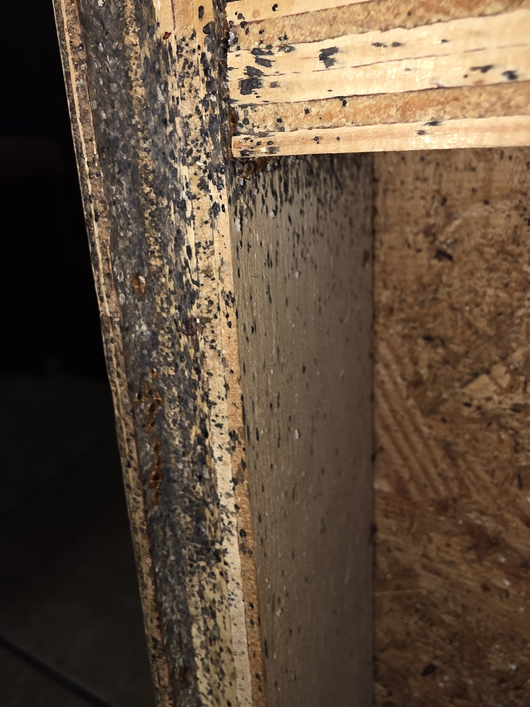
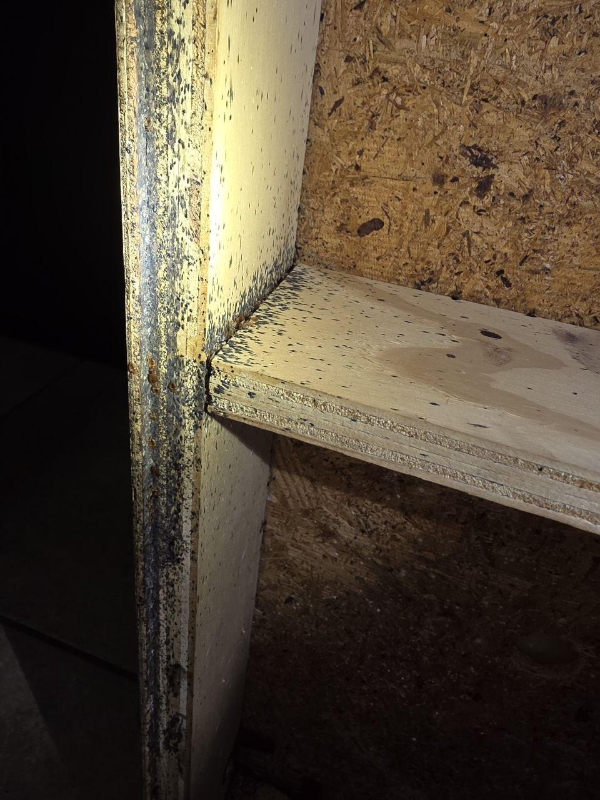
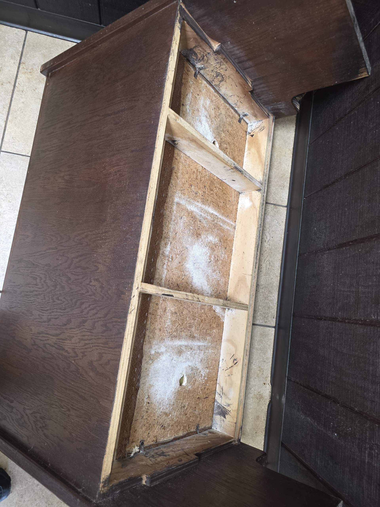
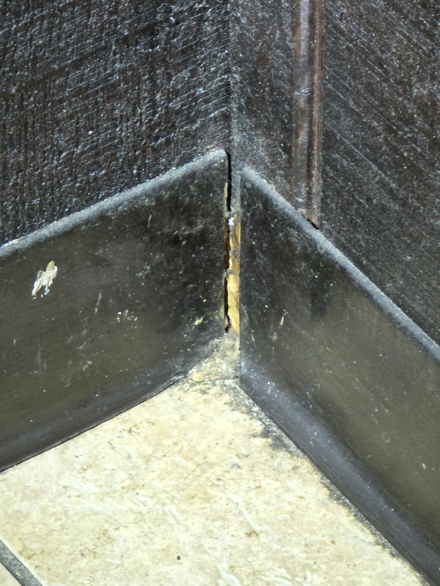

Executive Summary
Woodsby's Cafe has been a Pest Pro General Household Pest customer since March 2026. During a recent service visit, evidence of bed bug activity was identified in the dining area. A comprehensive inspection was subsequently performed, confirming a significant and long-standing infestation throughout the booth seating, dining chairs, and bar area of the facility.
The inspection revealed an infestation that has persisted at this location for several years and survived prior treatment attempts by multiple pest control providers. Live specimens at all life stages were documented, including eggs, shed casings, nymphs, and fed adults. The structural characteristics of the dining room create a complex harborage environment that requires a multi-method elimination approach to resolve effectively. This proposal outlines a three-phase program designed to eliminate the existing population, prevent egg cycle rebound, and provide ongoing protection against re-introduction.
Property Overview
Woodsby's Cafe is a full-service restaurant with a large dining room and a dedicated bar area. The dining room contains 13 upholstered booths, 18 tables, 37 dining chairs, and a full bar with 8 barstools. The walls throughout are finished with dark wood panel wainscoting from floor to mid-height, rubber base molding, and are covered with framed artwork, signs, and decorative items on every wall surface.
This combination of structural characteristics creates extensive harborage opportunities that are not accessible with standard spray applications alone. Every framed piece on the wall, every gap in the baseboard trim, every joint in the booth framing, and every electrical outlet in the dining room represents a potential harborage point that must be addressed as part of a complete treatment program.


Inspection Findings
A thorough inspection of the dining room and bar was conducted with booths opened and furniture turned to allow access to all interior structural surfaces. The following conditions were documented:
- Active infestation confirmed in multiple booths throughout the dining room, with evidence of high-level colony activity in the front corner booth and adjacent seating areas.
- All life stages present: Eggs, shed casings (exuviae), nymphs at multiple developmental stages, and engorged adult specimens were observed, confirming an established, actively reproducing population.
- Dense fecal spotting covering interior booth frame surfaces, seat platform edges, corner joints, and OSB backing panels throughout multiple units.
- Active harborage in trim gaps: Live nymphs and debris documented in the gap between booth seat backs and decorative woven trim, confirming the infestation is occupying all available structural voids within the furniture.
- Prior treatment evidence: White pesticide dust residue from previous pest control applications was found inside booth structural cavities. The infestation persisted and rebuilt through these prior treatments.
- Wall void access confirmed: Gaps at rubber baseboard seams provide direct access to wall cavities, allowing populations to harbor inside walls and survive surface-only treatments.
- Spread to chair seating: Prior treatment dust documented beneath dining chair undercarriages, indicating the infestation has migrated beyond the fixed booth seating into the movable furniture throughout the dining room.
Photographic Evidence


History of Infestation and Prior Treatment Attempts
The evidence collected during this inspection is consistent with a bed bug infestation that has been present at this location for several years. Multiple pest control providers have cycled through the property during this period, and aged pesticide dust residue inside booth structural cavities documents those prior treatment attempts.
Despite these efforts, the infestation has persisted and rebuilt each time. This is not unusual for a commercial restaurant environment with this level of structural complexity. Standard crack and crevice or surface spray treatments, applied without simultaneously addressing the wall voids and the internal cavities within the booth structures, will temporarily reduce the visible surface population while leaving harborage populations intact. Those populations survive, continue to reproduce, and restore the infestation within weeks to months of each treatment.


Recommended Treatment Program
The initial treatment is a comprehensive, multi-method cleanout targeting all confirmed and potential harborage points throughout the dining room and bar. All furniture will be flipped to provide access to all underside surfaces before treatment begins.
Treatment surfaces:
- 13 dining booths: all interior and exterior surfaces, seats, backs, bases, and frames, including behind all decorative trim panels
- 18 tables: undersides, legs, and all structural joints
- 37 dining chairs: all sides including seat undersides and leg joints
- 8 barstools: all sides and structural joints throughout the bar area
- Full bar area: surfaces, undersides, and all cracks and crevices
- All removable wall-mounted artwork and framed pieces: treatment behind each item prior to replacement
- Electrical outlets throughout the dining room: outlet covers removed, wall voids injected with residual dust, covers replaced
Treatment methods applied:
- Pyrethrin contact kill applied via full crack and crevice treatment to all seating, tables, and wall harborage points
- Knockdown agent applied to all active infestation areas
- Insect growth regulator (IGR) applied to all cracks, crevices, and surface areas to disrupt the reproductive cycle and prevent egg viability going forward
- Residual dust applied to wall void spaces accessed via outlet removal points and baseboard gaps throughout the dining room
- Complete fogging treatment of the full dining room and bar area to reach airborne populations and surface areas not accessible by contact application alone
Bed bug eggs are resistant to most contact insecticides at the time of initial application. Eggs deposited prior to Phase 1 will begin to hatch in the days following treatment and produce a new generation of nymphs. Phase 2 is performed at the two-week mark to eliminate this second wave before it can develop to reproductive maturity. This treatment is less intensive than Phase 1 but follows the same protocol across all major harborage zones. Skipping Phase 2 significantly increases the probability of infestation rebound.
Following the two-phase cleanout, a minimum of three consecutive monthly visits are strongly recommended. Each visit includes a full inspection of the dining room and bar and targeted preventative booster treatment of any areas showing residual or new activity. Bed bug re-introduction in a restaurant environment is an ongoing risk due to regular guest traffic. Monthly monitoring provides early detection that protects the program investment made in Phases 1 and 2 and prevents a future cleanout from being necessary.
Upon completion of the three-month monthly program, clients are transitioned to a quarterly maintenance schedule. Each quarterly visit includes a full inspection of all treatment zones and a preventative booster treatment to maintain the barrier established during Phases 1 through 3. This ongoing program ensures long-term protection against re-introduction and provides early detection should any new activity be identified. Quarterly visits are billed at $120.00 per service and can be continued indefinitely as part of an active Pest Pro service account.
Preparation Requirements
The following must be completed by Woodsby's Cafe staff before the technician arrives on treatment day. Incomplete preparation at the time of arrival may require rescheduling.
- All condiments, caddies, and table accessories removed from all tables and booth surfaces
- All dishware, silverware, glassware, and food items removed from the treatment area or fully covered and sealed
- Any food items stored in the bar area, cashier area, or dining room, including packaged goods, baked items, cookies, brownies, or similar products, must be removed from the area or stored in sealed, airtight containers prior to the start of treatment
Investment Summary
The table below shows industry standard rates for a commercial bed bug elimination program of this scope, alongside your preferred customer pricing as an active Pest Pro account.
| Service | Description | Industry Standard | Your Price |
|---|---|---|---|
| Phase 1 Intensive Bed Bug Cleanout |
13 booths · 18 tables · 37 chairs · 8 barstools · bar area Pyrethrin crack/crevice · knockdown · IGR · dust · fog Outlet removal and wall void injection included |
$2,400.00 | $1,422.00 |
| Phase 2 Follow-up Treatment (~2 weeks) |
Secondary treatment targeting newly hatched nymphs from eggs present at time of Phase 1. Same protocol, less intensive coverage. Required to break the egg hatch cycle. | $900.00 | $466.00 |
| Phase 3 Monthly Preventative (3-month minimum) |
Monthly inspection and targeted preventative booster treatment performed at the time of the regular monthly GHP service visit. Minimum 3 consecutive months following the cleanout phases. Billed in addition to the regular monthly service rate. | $250.00/mo | $100.00/mo |
| Phase 4 Quarterly Maintenance (ongoing) |
Once-per-quarter inspection and preventative booster treatment performed at the time of the regular monthly GHP service visit. Maintains the protection barrier established through the cleanout program. Billed in addition to the regular monthly service rate. No minimum term. | $250.00/visit | $100.00/visit |
| Total Program Investment — Phases 1, 2, and 3 (3 months) | $4,050.00 | $2,188.00 | |
| Your savings as a Pest Pro customer: | $1,862.00 | ||
About Pest Pro
Pest Pro has been protecting Florida homes and businesses since 1988. Our Central Florida operation serves the Kissimmee and greater Orlando area with science-backed pest control tailored to the conditions of Florida's unique environment. Daniel Rumsey, CPO, brings 30 years of field experience to every assessment, including specialized expertise in bed bug identification, documentation, and elimination in commercial settings.
Every treatment program we design is specific to the property, the pest, and the structural conditions found on-site. Cookie-cutter approaches do not work for established commercial infestations. This program was built for Woodsby's Cafe specifically, based on what we found during this inspection.
Florida Pest Control Business License: JB304313 · Liability Insurance: Markel Insurance, Policy PCG7470-07 · Coverage: $1,000,000 per occurrence / $3,000,000 aggregate
Prepared by:
Daniel Rumsey, CPO
PEST PRO, LLC
3211 Vineland Road, #107 · Kissimmee, FL 34746
Cell: 954-410-6389 · Office: 407-922-2276
info@PestProLLC.com
This estimate is valid for 30 days from the date of issue. Scheduling is subject to technician availability. Preparation requirements must be fully completed prior to technician arrival.